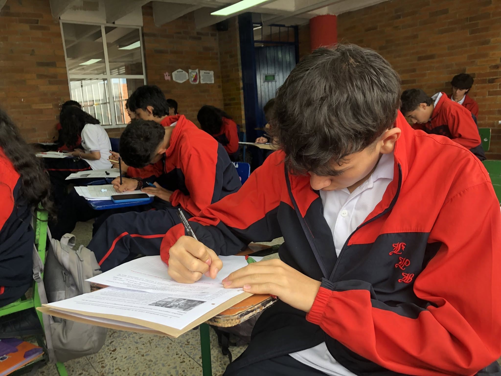
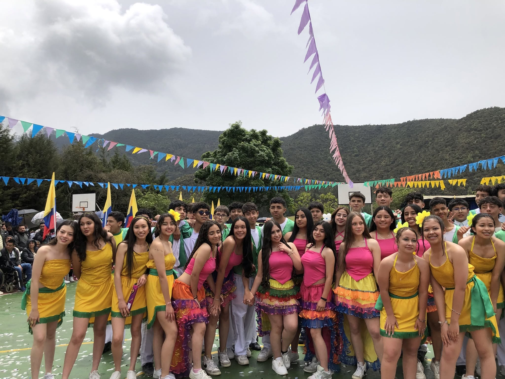

Formación académica
Fortalecimiento de conocimientos y competencias en las diferentes áreas fundamentales del aprendizaje.
En Secundaria acompañamos a nuestros estudiantes en una etapa fundamental de su formación, fortaleciendo sus conocimientos, autonomía, pensamiento crítico y capacidad para construir su propio camino.
La Secundaria es una etapa de importantes cambios académicos, personales y sociales. Por eso, en el LPB buscamos que cada estudiante encuentre nuevas formas de aprender, expresar sus ideas, asumir responsabilidades y descubrir sus capacidades.
Nuestro acompañamiento combina una formación académica sólida con experiencias que promueven la creatividad, la convivencia, la autonomía y el trabajo en equipo.

Fortalecemos diferentes dimensiones del aprendizaje para que nuestros estudiantes desarrollen habilidades académicas, personales, sociales y tecnológicas.
Fortalecimiento de conocimientos y competencias en las diferentes áreas fundamentales del aprendizaje.
Desarrollo progresivo de habilidades comunicativas que permiten comprender y utilizar el idioma en diferentes situaciones.
Espacios para explorar herramientas digitales, programación, tecnología y nuevas formas de solucionar problemas.
Observación, experimentación y análisis para comprender fenómenos y despertar la curiosidad científica.
Experiencias artísticas y culturales que favorecen la expresión, la sensibilidad y el desarrollo de nuevos talentos.
Fortalecemos el respeto, la comunicación, la participación y la capacidad de aportar positivamente a la comunidad.

Los conocimientos también se fortalecen cuando nuestros estudiantes pueden experimentar, crear, compartir y enfrentarse a nuevos desafíos.
Entendemos que Secundaria también representa una etapa de cambios personales. Por eso acompañamos a nuestros estudiantes en su proceso académico, social y formativo.
Promovemos hábitos de organización, responsabilidad y compromiso con el propio aprendizaje.
Invitamos a analizar, cuestionar, argumentar y construir ideas fundamentadas.
Fortalecemos relaciones basadas en el respeto, la empatía, el diálogo y la cooperación.
Creamos oportunidades para reconocer intereses, habilidades y talentos que comienzan a definir su futuro.
Conoce nuestra propuesta educativa y descubre cómo acompañamos a cada estudiante durante su etapa de Secundaria.